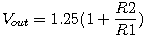

The adjustable linear voltage regulator is one of the most widely used ICs. It provides a simple way to generate a regulated voltage at practically any level, with a minimum of complexity and external components.
The regulator's output voltage is set by the resistor divider R1 and R2. The output voltage follows the relation  - or intuitively, that the voltage produced by the divider should be 1.25 volts when the output is at the desired voltage.